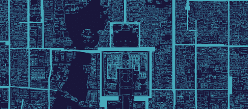
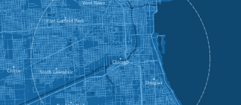
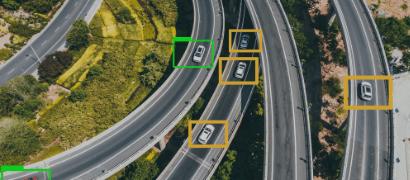

SERVICE
LBS
Location-Based Service
Mobility Platform
실시간 교통정보, 경로탐색, 지도, 지오코딩, POI정보, 검색기능 등 다양한 모빌리티 요소들을 연계 수집하고 고객사의 요구사항을 반영한 최적의 형태로 가공 후
RestFul API 및 Mobile (Android, iOS) SDK를 배포합니다.
-

Microsoft Bing Map Service
-
BMW RTTI / FTS / Connected App Service
-

Tesla Map Contents Service
GIS (Geographic Information System)
지리정보로 존재하는 각종 컨텐츠의 위치 및 속성정보를 누구나 쉽게 사용하고 효율적으로 지원할 수 있도록 다양한 형태와 포맷으로 Map 제작을 수행하며
이를 기반으로 LBS 기반의 다양한 서비스를 제공할 수 있습니다.
-
어디가지또 Social Vector Map
-
표준노드링크
-

Microsoft Bing Map/Tesla Vector Map
Control
IoT Device 및 도로 인프라를 통해 수집되는 각종 위치정보, 상태정보를 가공하여 고객이 원하는 현장 정보를 실시간으로 가시화하여 모니터링 및 관제서비스를 제공합니다.
-
셔틀버스 / Fleet 운행관리 시스템 구축
-
응급구난관제 센터 및 모바일 시스템
-
전자발찌 (위치추적 전자장치) 관리시스템
HD/ADAS map / LDM
안전한 자율주행을 위해 필적인 요소라고 할수 있는 고정밀지도(HD/ADAS Map) 부터 Dynamic Map 업데이트에 적용 가능한 동적정보시스템(LDM), V2X 까지 자율 협력주행을 위한 기술을 제공합니다.
-
JLR향 ADAS map 생성/배포 System
-

Road Learner Platform
-
Dynamic Road Data Platform
핵심기술
-
Geocoding Engine
클라이언트가 지오코딩 엔진에 주소를 요청하면 해당 좌표를 추출
-
소통 정보 타일 생성
서비스에 최적화된 레이어를 구성하며 실시간 소통 정보와 연계하여 지도 서비스와 동일한 체계의 지도 타일 생성
-
경로탐색
출발지에서 목적지까지의 수 많은 도로 링크들을 연결하여 여러가지 경로를 구성하고 각각의 경로에 포함된 도로의 종류, 회전 정보 등을 반영하고 고려하여 편리하고 빠르게 목적지까지 도착할 수 있도록 최적의 경로 안내
-
맵매칭
센서 데이터에 의해 산출한 현지 위치와 지도 데이터를 비교하면서 현재 위치를 구하고 상세도가 있는 지역에서 디바이스의 현재 위치가 지도상으로 나타나도록 수정
-
이동 가능 탐색 범위 엔진
현 위치에서 현재 남은 연료로 주행 가능한 공간적 범위를 다양한 알고리즘으로 계산 후 다각형으로 표시